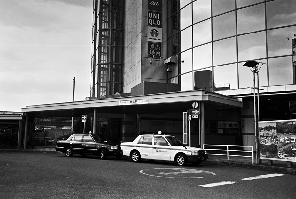

東飯能駅 higashihannou
飯能駅←← 西武秩父線 →→ 高麗駅
金子駅←← 八高線 →→ 高麗川駅

2018/2/27 ﾐﾉﾙﾀCLE 35mm ｱｸﾛｽ

2017/4 ﾛｰﾗｲ35 ｱｸﾛｽ

2017/4 ﾛｰﾗｲ35 ｱｸﾛｽ

2017/1 PentaxLX Pentax-M 2.8/28 Acros

2017/1 PentaxLX Pentax-M 2.8/28 Acros

2017/1 PentaxLX Pentax-M 2.8/28 Acros
